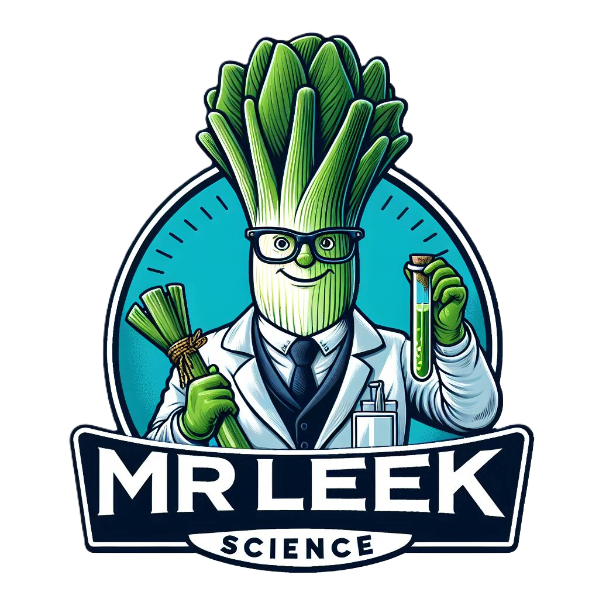

GCSE Combined Science: Cell Biology

AQA Combined Science: Trilogy (8464)
Cell Biology Mastery Quiz
High-precision multiple-choice revision with mark-scheme distractors and topic diagnostics.
SPECIMEN 01
Cell Structure
Loading question...
EST. GRADE
9-9
Revision Session Complete!
SCORE
0 / 10
PERCENTAGE
0%
BEST STREAK
0
TOTAL TIME
00:00